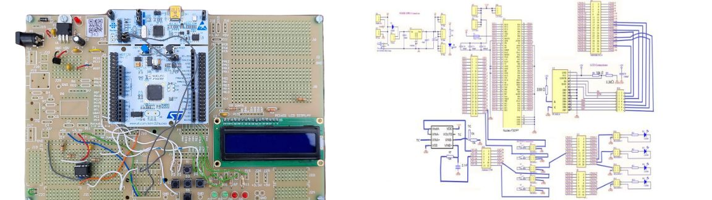

Digital multimeter and Waveform generator
In the E-design 314 module at the University of Stellenbosch, I completed a project focused on designing, building, and testing a multi-use instrument that served as both a digital multimeter and an arbitrary waveform generator. My project involved using a baseboard and an STM32 microcontroller board to create a device capable of measuring DC/AC voltage and current with precision and displaying it on an LCD screen and generating a waveform with adjustable amplitude, frequency, and shape.
During this project, I utilized my background knowledge in electrical and electronic engineering, programming, and testing to make design decisions and create suitable tests that ensured the system met the specified requirements and specifications. I am proud to say that I successfully completed the project and received a cum laude for my report, which documented my design decisions, test methods, and results.
This was my first big project that allowed me to apply my skills and knowledge to a practical application, providing an excellent opportunity to showcase my expertise in engineering.
If you are interested in the detail design, testing and results process you can find the report of this project on GitHub here